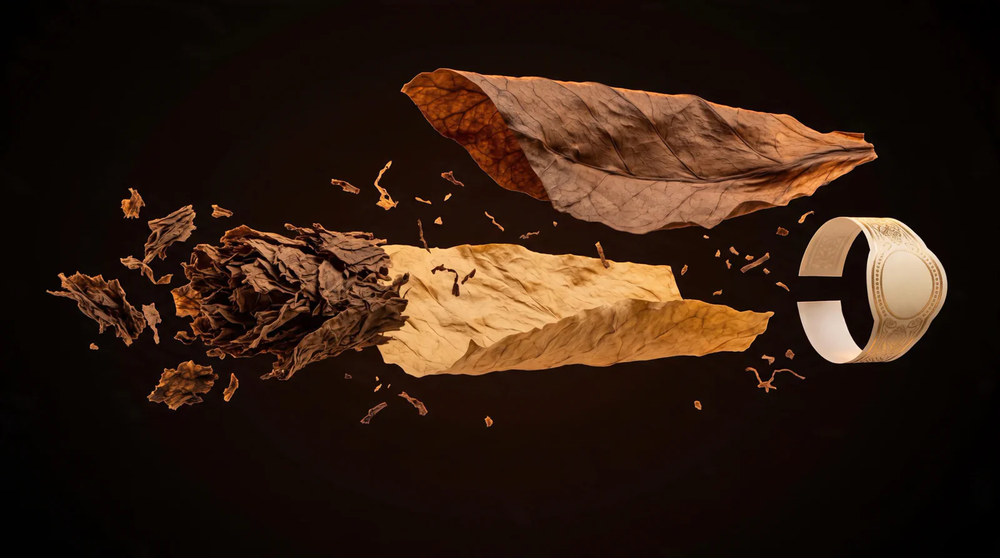
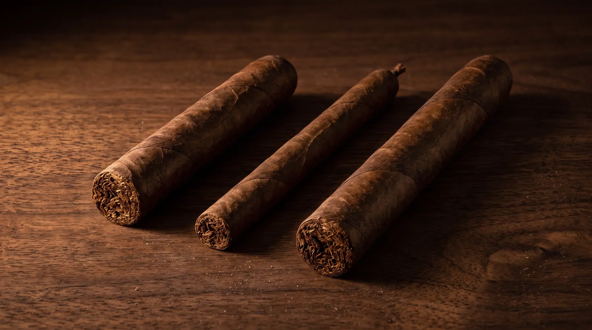
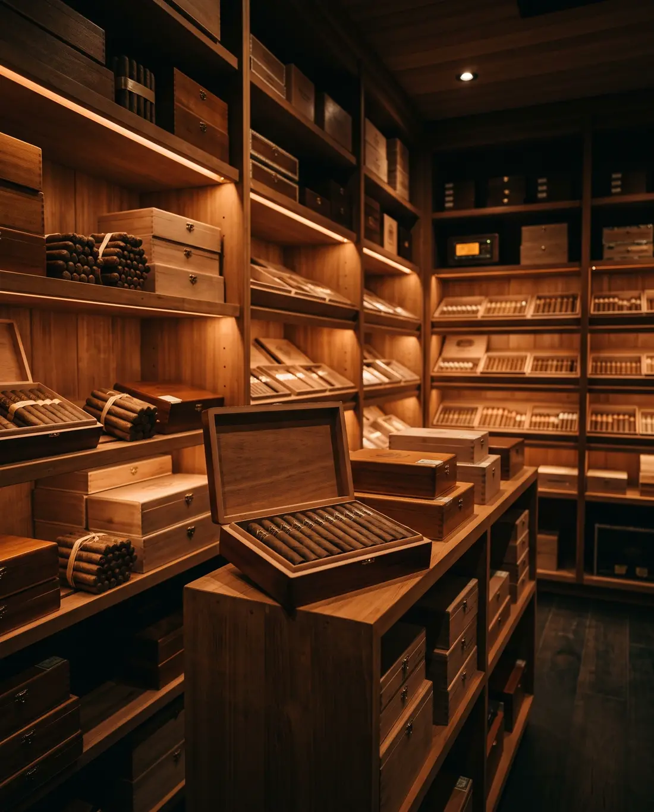
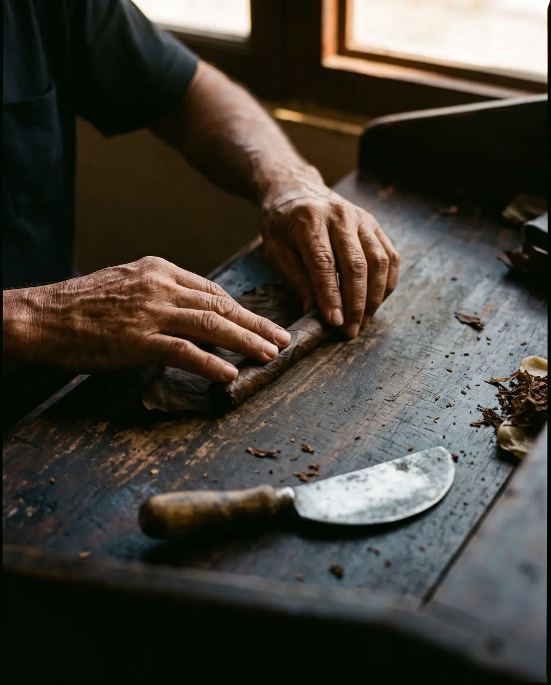

Tres hojas, tres cosechas.
Ligero para la fuerza, seco para el aroma, volado para que arda parejo. Todo lo que vas a sentir se decide acá.

Ligero para la fuerza, seco para el aroma, volado para que arda parejo. Todo lo que vas a sentir se decide acá.
Sostiene la tripa y le da forma. Si está mal puesta, el habano tira mal aunque el resto sea perfecto.
Crece a la sombra y se elige a mano. Es lo primero que tocás y lo último que olvidás.
Va al final, cuando el habano ya demostró que la merece.
La colección

124 mm · cepo 50. Fuerza media, 45 minutos.
$ 38.000192 mm · cepo 38. Fino y floral, una hora.
$ 46.000178 mm · cepo 47. Redondo y largo, hora y media.
$ 54.000
La cava
Dejá tus habanos con nosotros. Tenés un lugar con tu nombre, cedro español y el clima controlado todo el año. Cuando venís, ya están a punto.
El torcedor
Los viernes a la tarde armamos en la casa, delante tuyo. Te sentás, elegís la liga y te llevás el habano que viste nacer.

Vení a probar
Una hora en la casa con un habano elegido para vos. Te escribimos por WhatsApp para confirmar el día.
Vista de muestra: en la página real te llega el aviso por WhatsApp.